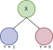

from sklearn import tree
from sklearn.datasets import make_blobs
from sklearn.inspection import DecisionBoundaryDisplay
import matplotlib.pyplot as plt
import numpy as np
# Creación de los datos
X, Y = make_blobs(n_samples=200, centers=4, random_state=6)
plt.scatter(X[:, 0], X[:, 1], c=Y, s=30)
plt.title("Datos originales")
plt.xlabel("x1")
plt.ylabel("x2")
plt.show()3 Día 2
3.1 Regresión Lineal
3.2 Regresión Logística
3.3 Decision Trees
3.3.1 Definición
Un árbol de decisión (DT) es un grafo no cíclico que se utiliza para tomar decisiones (clasificar). En cada nodo (rama) del grafo se evalúa uno de los features. Si el resultado de la evaluación es cierto (o está debajo de un umbral), se sigue la rama de la izquierda, si no se va a la derecha.

Por lo tanto, los DT son un modelo no paramétrico.
Para crear el DT, se intenta optimizar el promedio de la máxima verosimilitud: \[ \frac{1}{N} \sum_{i=1}^{N}\left( y_i \ln{f_{ID3}(x_i)} + (1-y_i) \ln{(1-f_{ID3}(x_i))}\right) \] donde \(f_{ID3}\) es un DT y \(f_{ID3}(x) \stackrel{\text{def}}{=} Pr(y=1|x)\)
3.3.2 Construcción
Para construir el árbol, en cada nodo de decisión, se intenta minimizar la entropía de la información.
La entropía de un conjunto \(\cal{S}\) viene dada por: \[ H(S) \stackrel{\text{def}}{=} -f_{ID3}^{S} \log_2 (f_{ID3}^{S}) - (1-f_{ID3}^{S}) \log_2 (1-f_{ID3}^{S}) \]
Y si un grupo se divide en dos, la entropía es la suma ponderada de cada subconjunto: \[ H(S_-, S_+) \stackrel{\text{def}}{=} \frac{|S_-|}{|S|}H(S_-) + \frac{|S_+|}{|S|}H(S_+) \]
3.3.3 Ejemplo
Consideremos los siguientes datos:
Atributos:
- Edad: viejo (v), media-vida(m), nuevo (nv)
- Competencia: no(n), sí(s)
- Tipo: software (swr), hardware (hwr)
| Edad | Competencia | Tipo | Ganancia |
|---|---|---|---|
| v | s | swr | baja |
| v | n | swr | baja |
| v | n | hwr | baja |
| m | s | swr | baja |
| m | s | hwr | baja |
| m | n | hwr | sube |
| m | n | swr | sube |
| nv | s | swr | sube |
| nv | n | hwr | sube |
| nv | n | swr | sube |
Cálculo de las entropías: Primero se tiene que probar todos los features para ver cuál tiene mayor ganancia de información (reduce la entropía)
Entropía total: \[ H(S) = \text{Entropía de los casos baja} + \text{Entropía de los casos sube} \]
\[ H(s) = -\frac{5}{10}*\log_2(\frac{5}{10}) - \frac{5}{10}*\log_2(\frac{5}{10}) = 1 \]
Ahora vamos a decidir la primera separación con las edades \(H = \frac{3}{10} \cdot 0 + \frac{4}{10} \cdot 1 + \frac{3}{10} \cdot 0 = 0.4\)
Ahora vamos a decidir la primera separación con la competencia \(H = \frac{4}{10} \cdot 0.811 + \frac{6}{10} \cdot 0.918 = 0.8752\)
Ahora vamos a decidir la primera separación con las edades \(H = \frac{4}{10} \cdot 0.811 + \frac{6}{10} \cdot 0.918 = 0.8752\)
Ahora vamos a decidir la primera separación con el tipo  \(H = \frac{6}{10} \cdot 1 + \frac{4}{10} \cdot 1 = 1\)
\(H = \frac{6}{10} \cdot 1 + \frac{4}{10} \cdot 1 = 1\)
Concluimos que lo que nos da la máxima ganancia de información es primero decidir por edades, eso nos deja dos nodos hoja y un nodo rama que debemos volver a separar.
Ahora vamos a buscar el segundo nivel, donde vamos a separar el grupo que tiene edades medias por competencia:
 \(H = \frac{2}{4} \cdot 0 + \frac{2}{4} \cdot 0 = 0\)
\(H = \frac{2}{4} \cdot 0 + \frac{2}{4} \cdot 0 = 0\)
Con esto ya se clasificaron todos los datos, puesto que terminamos solo con nodos hojas:
Esto también se puede hacer con valores numéricos, que de hecho, es lo que se puede hacer con scikit learn
y con esto se obtiene este árbol de decisión:
3.3.4 Comandos básicos en python
Estos son los comandos básicos en python
#| label: dibujoArbol01
#| fig-cap: "Árbol de decisión"
from sklearn import tree
X = # Lista con los features (lista de listas)
Y = # Lista con los labels
# Se define la variable que tendrá el árbol
clf = tree.DecisionTreeClassifier()
# Se calcula el árbol
clf = clf.fit(X, Y)
# Se utiliza el árbol para predecir el label de un dato nuevo
clf.predict_proba(X0)
# Se dibuja el árbol
tree.plot_tree(clf)y este sería un ejemplo sencillo en python:
Primero creamos los datos
Luego se crea el arbol
clf = tree.DecisionTreeClassifier()
clf = clf.fit(X, Y)
tree.plot_tree(clf)
plt.show()
y por último, dibujamos las separaciones
DecisionBoundaryDisplay.from_estimator(
clf,
X,
response_method="predict",
)
plt.scatter(X[:, 0], X[:, 1], c=Y, s=30)
plt.show()
y con esto se puede aplicar el árbol
print(clf.predict([[5.0, 1.0]]))
print(clf.predict([[-2.0, -1.0]]))
print(clf.predict([[6.0, -6.0]]))[0]
[3]
[0]y lo que devuelve es el número de grupo al que pertene el dato